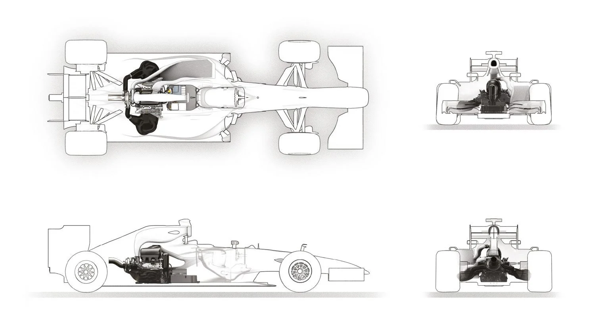
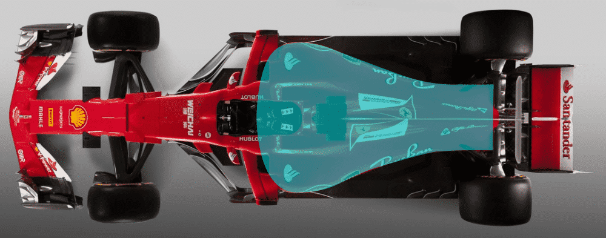
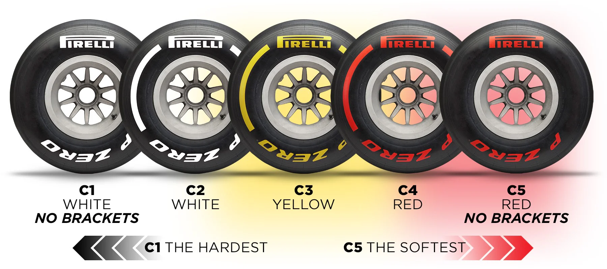

Sistemas de Recuperación de Energía
Los modernos monoplazas de Fórmula 1 están equipados con sistemas híbridos, como el ERS (Energy Recovery System), que recuperan energía de los frenos y gases de escape para aumentar la potencia. Este tipo de tecnología no solo mejora el rendimiento en pista, sino que también se ha aplicado en vehículos de consumo masivo.
Aerodinámica Avanzada
Desde la introducción de los alerones en los años 60 hasta el diseño actual de los monoplazas, la aerodinámica es un campo crucial en la Fórmula 1. Los avances en túneles de viento y simulaciones han permitido crear coches más rápidos y eficientes.
Neumáticos Inteligentes
Los neumáticos en la Fórmula 1 son altamente sofisticados, desarrollados por proveedores como Pirelli. Cada compuesto está diseñado para ofrecer el equilibrio perfecto entre velocidad y durabilidad, ajustándose a las exigencias de cada circuito.
